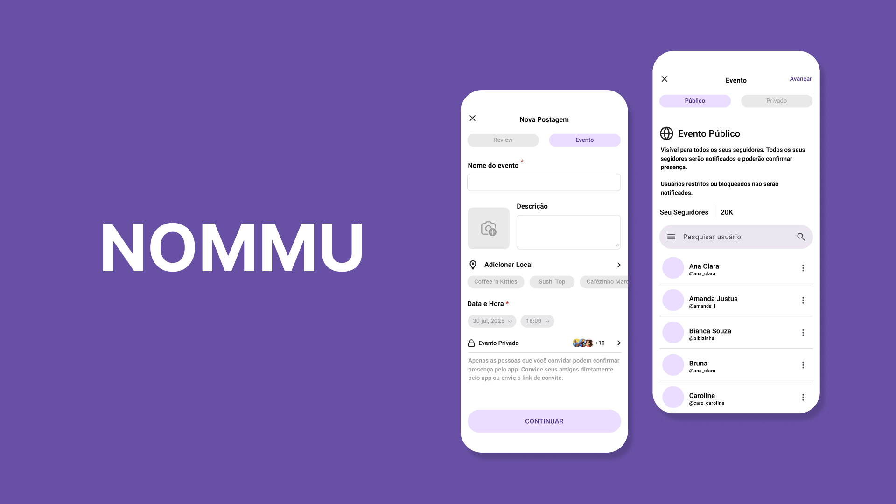
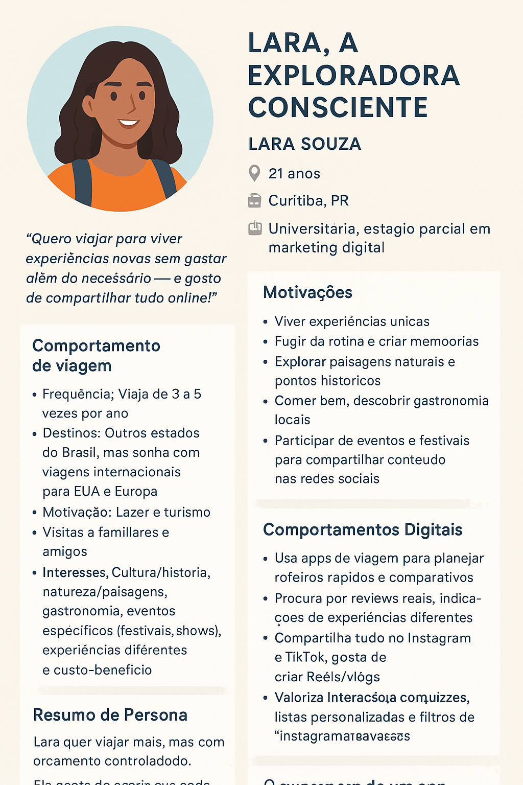
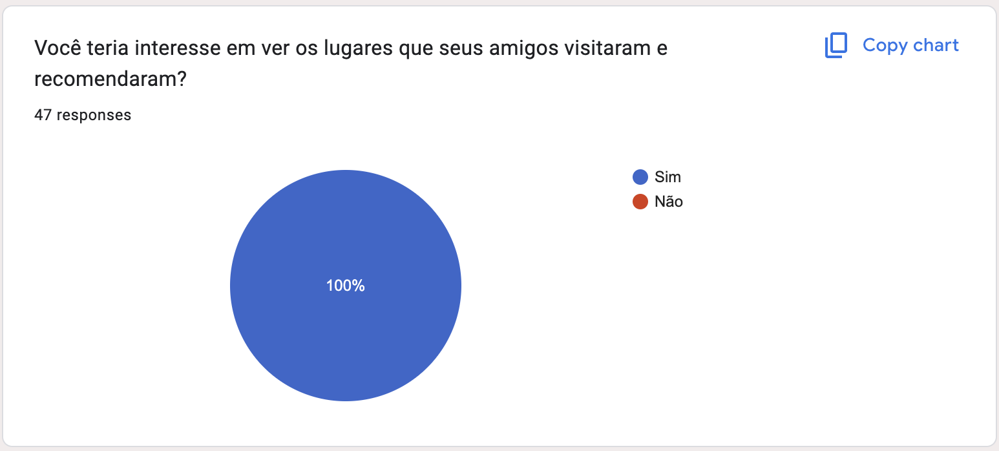
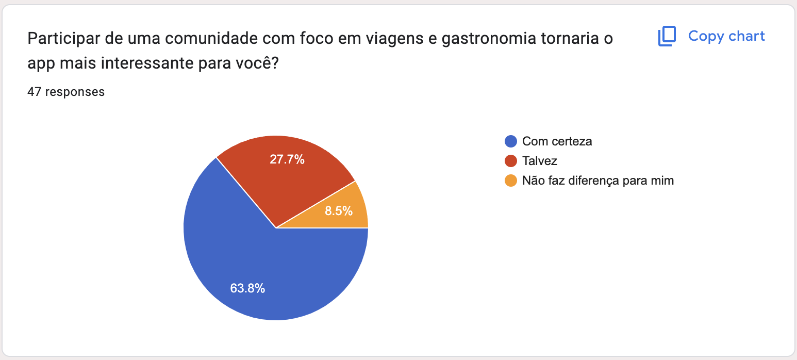
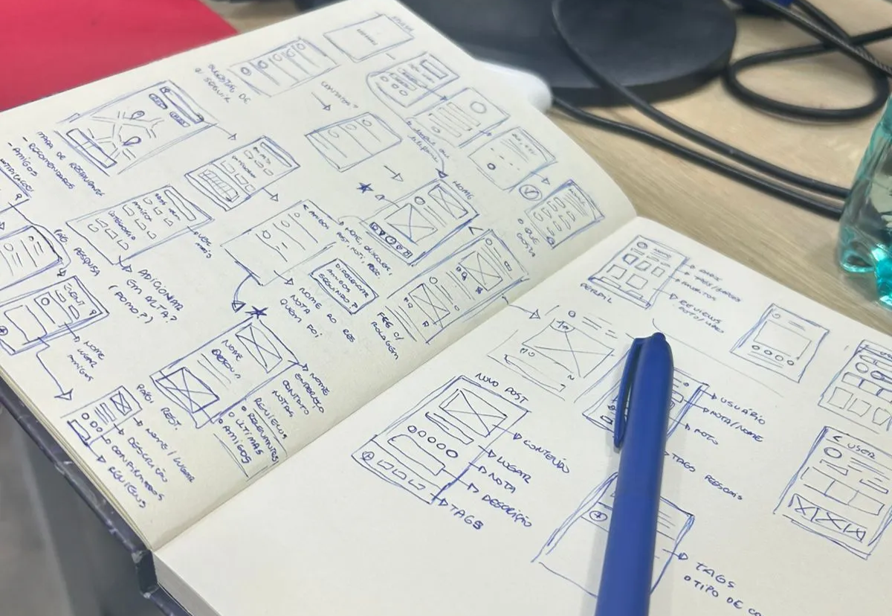
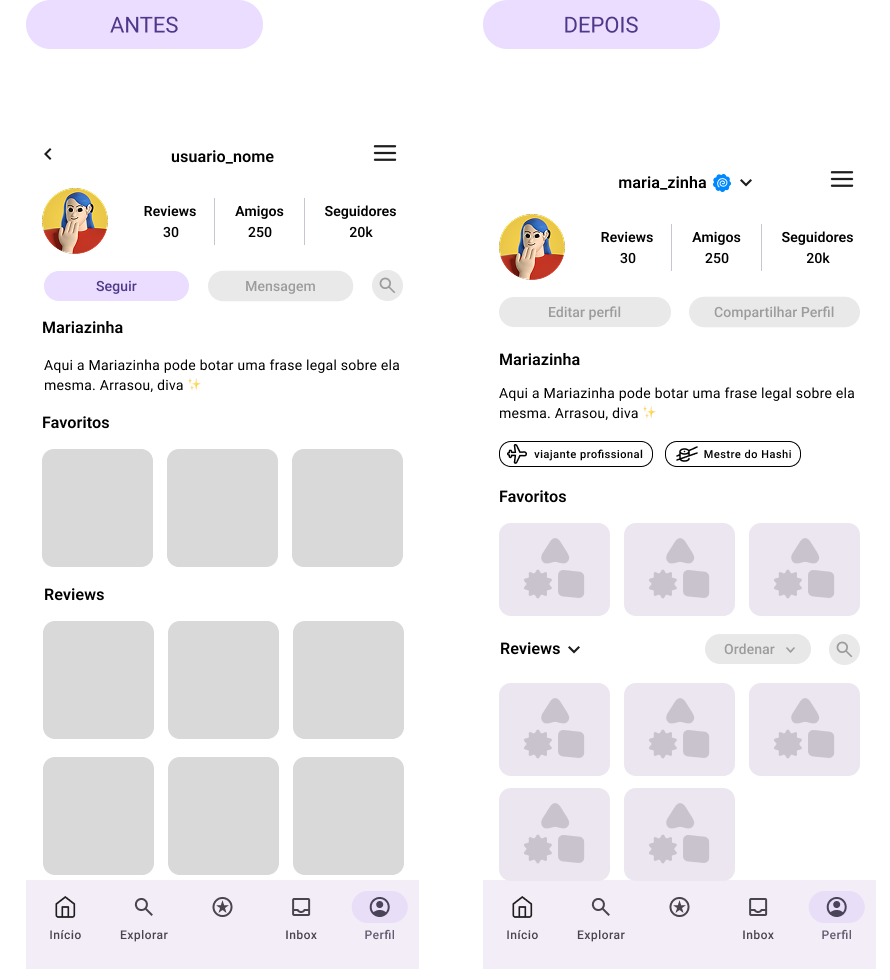
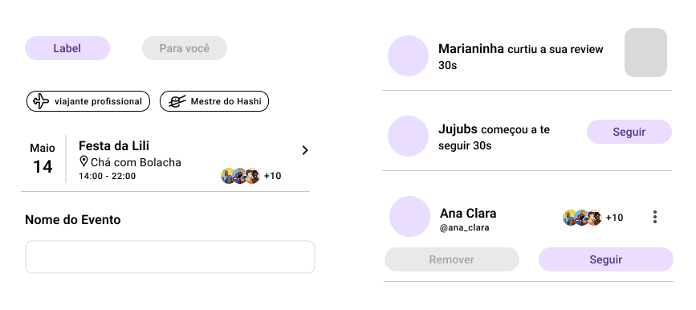
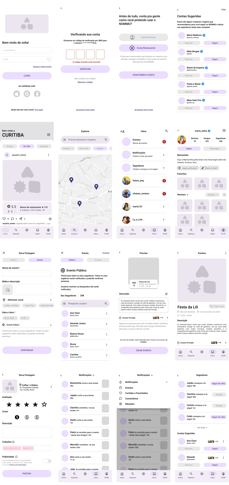

A gastronomic memory journal built on people you trust
My role
Product & UX Designer
Team
Pedro Gradowski, Pedro Gulin, Fernando Tramontina
Tools
Figma, Claude Code
Timeline
2026
Description
A digital journal for gastronomic memories, built for travelers and food lovers who want to save, rate, and share dining experiences with people they actually know.
Context
General social networks were never built to centralize gastronomic reviews. As niche, decentralized micro-networks — Substack, Medium, Foursquare — grew, an opportunity emerged: a space built specifically for food memories, where trust comes from friends, not from anonymous authority.

The product
In the app, users navigate a feed of restaurant reviews centered on friends rather than public recommendations. They can interact with posts, save them into folders and lists, and write their own reviews — with photos, prices, ratings, and custom tags (who they were with, the type of cuisine, and so on). Together, reviews and lists build a personal profile: a private, individualized record of dining memories.
My role and the team
I’m the only designer on a four-person team, working alongside three developers. Every product and UX decision passed through me, but nothing shipped without the team validating it against what was actually buildable — every design choice had to hold up on a technical-feasibility standpoint, not just a design one.
Who it’s for
Lara, 21, Curitiba. Wants to travel and explore new experiences without overspending, and shares everything online. Budget-conscious, values authenticity and word-of-mouth over polished recommendations.

The key decision: rebuilding the feed around trust
Before designing screens, we ran an interest survey with 47 respondents to validate the concept. The clearest signal: 100% of them wanted to know where their close friends had been eating and what they recommended.
That single number reshaped the feed. The original version surfaced recommended pages — the kind of curated, authority-driven content you’d see on a general platform. We rebuilt it to foreground friends’ reviews first.
Trust, in NOMMU, doesn’t come from being an established reviewer or influencer — it comes from being someone the user actually knows.
100%of 47 respondents wanted to see where friends had eaten and what they recommended.


63.8% said they were definitely interested in a travel and food community.
Testing the concept, not just usability
Once we had a non-interactive prototype, we ran an informal in-person test with 3 people. The goal wasn’t formal usability measurement — it was checking whether people connected with the concept and the core functionalities before investing further.
One outcome came directly out of that session: the team collectively landed on automating tags into search filters. Instead of users manually filtering their saved memories, any tag they create on a review automatically becomes a filter on their own profile.
Turning a clunky manual step into something that happens for free.

The session’s sketchbook page, where the tag idea was written down.

The profile screen before and after, with the tag badges added.

The tag pill, up close.
Craft: building on Material 3
Screens were built on an adapted Material 3 library — both its component set and its navigation structure — rather than a custom system from scratch. We adopted a 3-column grid specifically for scalability, anticipating how the interface needed to grow as more content types (folders, lists, profiles) were added.
Visual identity, now in motion
Screens have moved from wireframe to high fidelity, and NOMMU’s visual identity is currently being implemented directly into them — brand and interface converging in the same pass rather than being handled as separate phases.
The solution in practice
Login & feed → new post → profile: a 3-screen walkthrough.
01Login & feed
02New post
03Profile
Every screen that shipped

What’s next
The immediate priorities are finishing validation on the interactive prototype and documenting the design system, so decisions made so far (the feed logic, the tag-filter automation, the grid) are captured for the team going forward.
Where this stands
NOMMU hasn’t launched yet, so there’s no usage data — but the process already produced two concrete product decisions.
47survey respondents who validated the friends-first feed
3in-person testers who surfaced the tag-filter automation